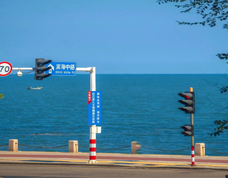

海上都市，欧亚风情

烟台zui美的滨海公路，这里的海岸线真的很美，沿途还有很多路牌，拍照绝绝子。
沙滩搁浅的鲸鱼雕塑，也是烟台zui出圈的打卡地。直接导航城市展示中心，方便停车且免费。沿岸还有很多打卡点，眺望台、礼堂、后沙广场。
那只巨大可爱的吾皇猫咪就在这儿~这里的风景很好，蓝天白云，游船灯塔，还可以看到旁边的烟台山景区
就算来烟台三天，也要留给养马岛一天！自驾或者租个电瓶车，随走随停开启最舒服的环岛游。大海、栈桥、日落、环岛路自驾...喜欢的海岛时光，这里都有！
绿色莱州，走进黑羊山
早期废弃的矿坑，如今成为网红打卡地，莱州黑羊山，实现华丽的转身。
湖水的颜色是最蓝绿的，夕阳日落也别有一番美，优美的画面很难不让人沉浸其中。
黑羊山风景区位于莱州西北部约10余公里，是典型的褶皱山体。石头斑驳凸显，长年累月的日晒雨风蚀雪覆，略显黑褐色，其状如羊。有的侧卧休息，有的凝眸远望，有的信步徜徉，仪态万千，引人遐想。
这里很适合带着小伙伴们一起来团建聚会慵慵懒懒躺平一下午 还是很舒服的，因为在如此快节奏与聒噪的城市里，很难找到这样远离喧嚣，还如此纯净的地方。